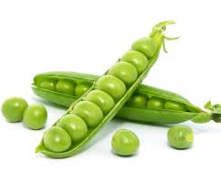

Coltivare in terreno molto ricco di materia organica e non coltivare dopo Solanacce o piante della stessa
famiglia delle cucurbitacee.
Varietà.zucchina chiara di Faenza
Periodo di semina:Marzo/Aprile
Primo raccolto:Fine Aprile
Ultimo raccolto:Fine Luglio
Raccolto
acquista semi
| Dimensione | Quantità |
|---|---|
| piccole(10cm) | 16 |
| Medie(11-16cm) | 26 |
| Grandi(>16) | 9 |
| 51 |
Piselli

American Wonder:Varietà media precoce come ciclo colturale.
Consigli
- Piantare in semenzaio riscaldato.
- acquistare vasetti biodegradabili(di cocco o cartone)
- mantenere areato il semenzaio per evitare muffe
- non usare il coperchio del semenzaio
- non usare mettere il semenzaio vicino al termosifone
- Fissare i sostegni nel terreno non appena le piantine raggiungono i 10 cm
- Acquistare una rete con spazi di non più 10 cm per garantire sostegni adeguati